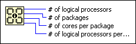
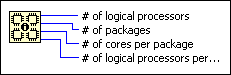

CPU Information Function
Owning Palette: CPU Information Functions
Requires: Base Development System
Returns the processor characteristics of the computer.

 Add to the block diagram Add to the block diagram |
 Find on the palette Find on the palette |
Owning Palette: CPU Information Functions
Requires: Base Development System
Returns the processor characteristics of the computer.

| Add to the block diagram |
Find on the palette |
 |
# of logical processors is the number of processing units.
|
||
|
# of packages is the number of packages, or chips. For example, a single hyperthreaded processor can have two or more logical processors, and a machine with two quad-core processors has eight logical processors. | ||
|
# of cores per package is the number of cores each package contains. | ||
|
# of logical processors per core is the number of processing units each core contains. |
You can use the following properties to programmatically obtain processor characteristics from a LabVIEW application running on a remote computer or target about the system on which the application runs.
National Instruments recommends that you use the CPU Information function rather than these properties to return information from the local computer.